Get started in three clicks
A demo molecule is already filled in for you, so your first visit takes about ten seconds.
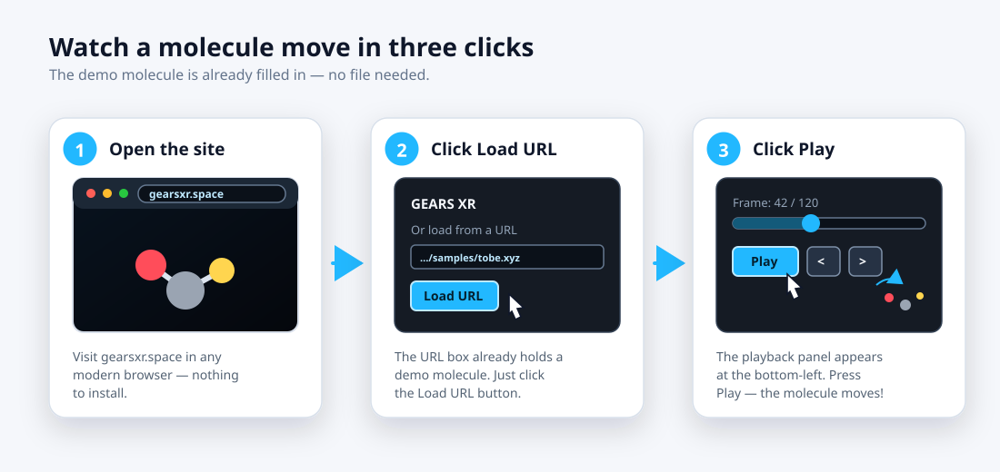
- Open gearsxr.space in your browser.
- Click Load URL in the top-left panel. The demo molecule loads in a moment.
- Click Play in the panel that appears at the bottom-left. That's it — the atoms start moving.
The window at a glance
Everything lives in four small panels around the edges — the molecule always has center stage.
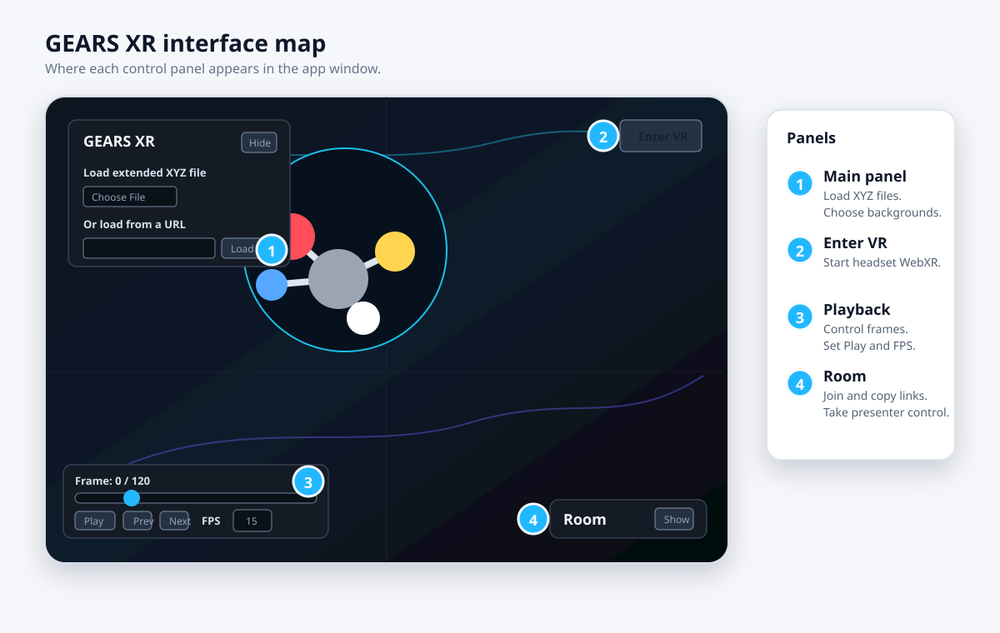
Main panel (top-left) opens files and changes the scenery. Enter VR (top-right) starts headset mode. Playback (bottom-left) plays the motion. Room (bottom-right) lets you watch together with others. Click Hide on any panel to tuck it away.
You can also look around freely: drag to orbit around the molecule, scroll to zoom, and right-drag to slide sideways.
Open your own molecule
GEARS XR reads .xyz files — a common, plain-text format for molecular snapshots and simulations.
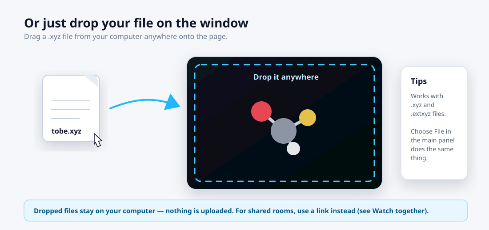
The easiest way: drag the file from your computer and drop it anywhere on the page. Or click Choose File in the main panel.
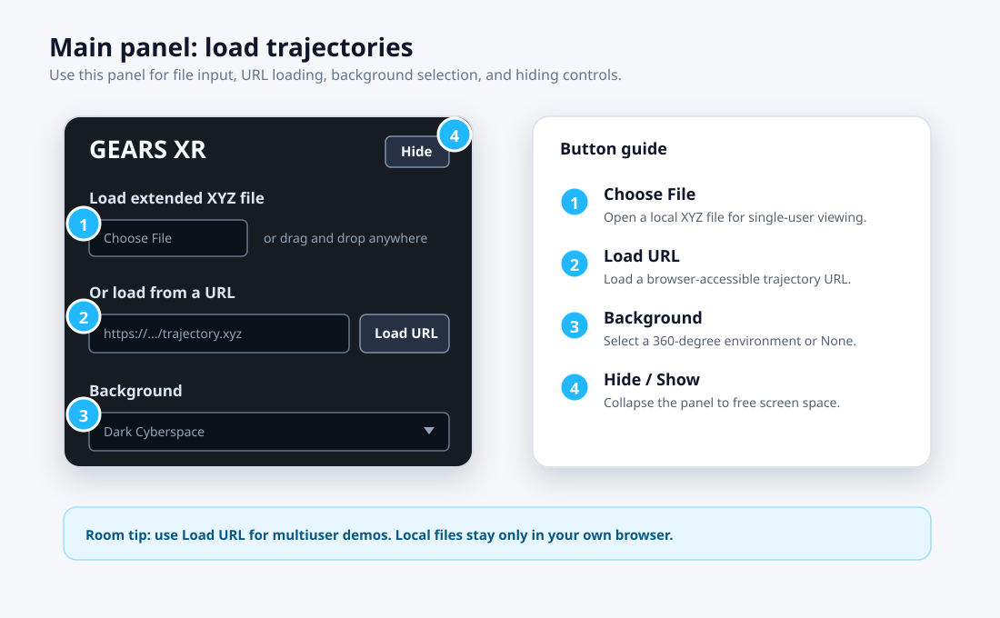
Got a file in the cloud? Paste a Google Drive, Dropbox, OneDrive, or GitHub link into the URL box and click Load URL — share links are understood automatically. Just make sure the file is shared as "Anyone with the link."
Play the movie
If your file holds more than one snapshot, the playback panel turns it into a movie.
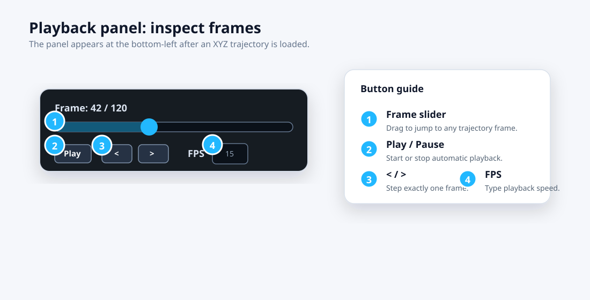
- Drag the slider to jump to any moment.
- Play / Pause runs the motion; < and > step one frame at a time.
- FPS sets the speed — higher numbers play faster.
Change the scenery
Pick a 360° background from the Background menu in the main panel — it surrounds you completely in VR.
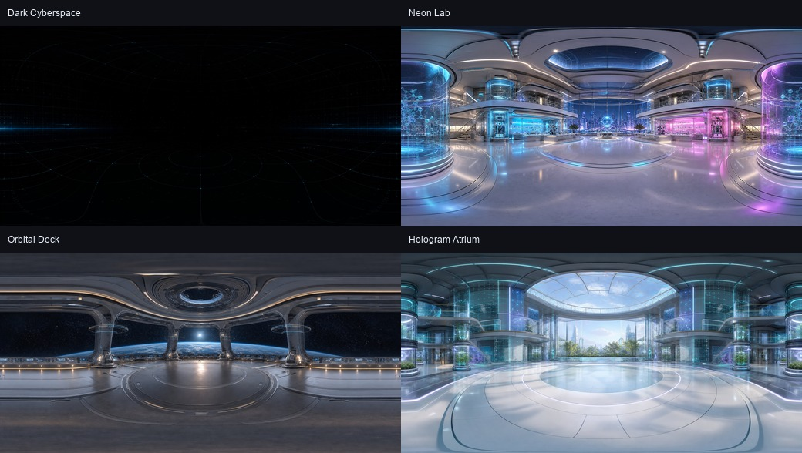
The default, Dark Cyberspace, keeps atom colors easiest to see. Choose None for a plain dark room.
See electron density and orbitals
Open a Gaussian Cube file (.cube) — the format chemistry programs export — to see the cloud of electron density or a molecular orbital as a smooth 3D surface around the atoms.
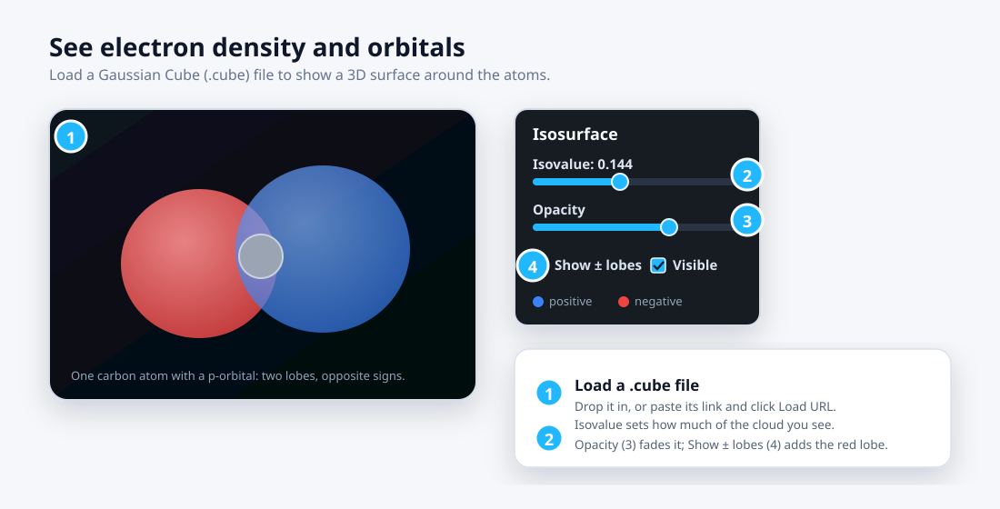
Load a .cube file the same way as any other — drag it onto the page, or paste its link and click Load URL. The atoms appear as usual, wrapped in a translucent surface. An Isosurface panel shows up at the bottom-left. It's a list of surfaces — start with the ones shown and click + Add surface to stack more (up to six). Each row is one surface you control on its own:
- Color — the swatch on the left recolors that surface; click it to pick any color.
- Isovalue — how much of the cloud that surface shows. Slide toward zero to grow it, outward to shrink it to the densest core. A negative isovalue draws the opposite orbital lobe.
- Opacity — how see-through it is, so inner surfaces and the atoms still show through.
- Checkbox hides a surface; × removes it.
Stacking a few — say a solid inner core and a faint outer shell at a smaller isovalue — shows how the density falls off with distance. For an orbital, keep a blue positive surface and a red one at the negative isovalue.
https://gearsxr.space/samples/orbital.cube for a sample orbital. A cube is a single snapshot, so there's no play timeline — just the surfaces. It works in VR too.Measure atoms with clicks
Curious how far apart two atoms are, or how sharp an angle is? Just click them.
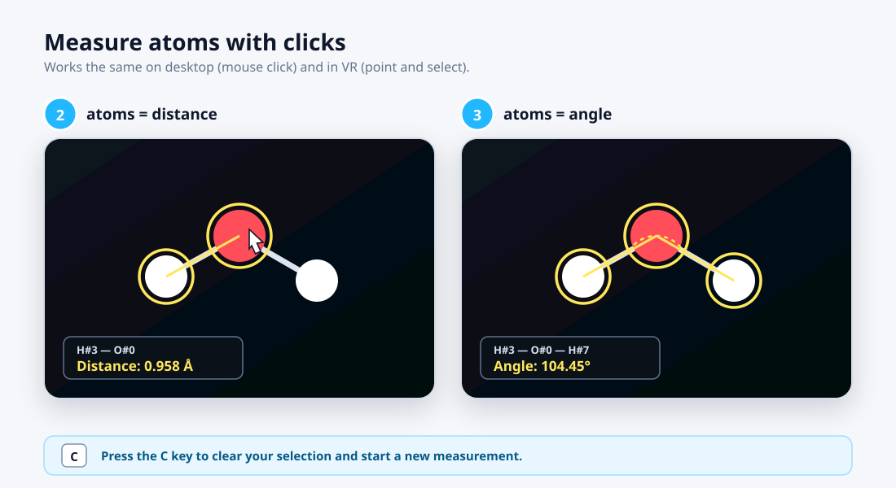
- Click two atoms → the distance between them appears.
- Click a third atom → the angle at the middle atom appears.
- Press C to clear and start a new measurement.
Watch together
Explore the same molecule with a colleague, a classroom, or a friend — all you share is a six-letter code.
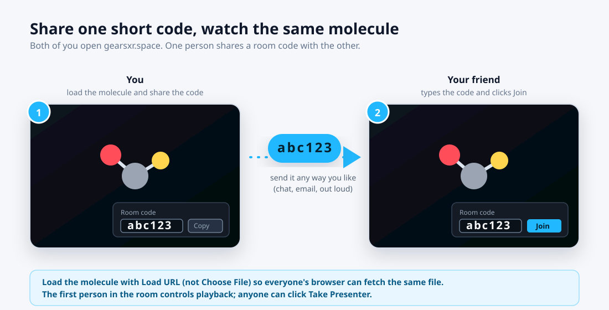
- Load a molecule with Load URL (a link everyone's browser can reach — not Choose File).
- Click Show on the Room panel at the bottom-right, then Join.
- Click Copy Code and send the short code to the others — chat, email, or out loud.
- They type the same code, click Join, and see exactly what you see.
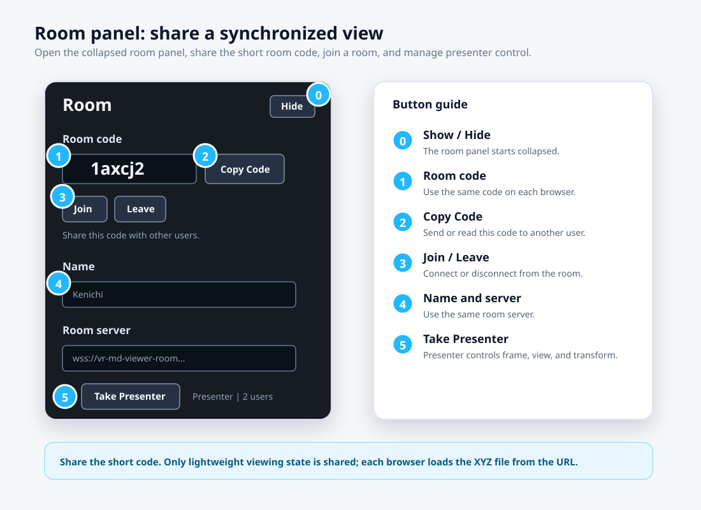
The first person in the room is the presenter — they steer playback, the view, and the molecule. Anyone else can click Take Presenter to take the wheel.
Step inside with VR
With a VR headset (like a Meta Quest), the molecule floats in the room with you.
- Put on your headset and open gearsxr.space in its browser.
- Load a molecule, then tap Enter VR at the top-right.
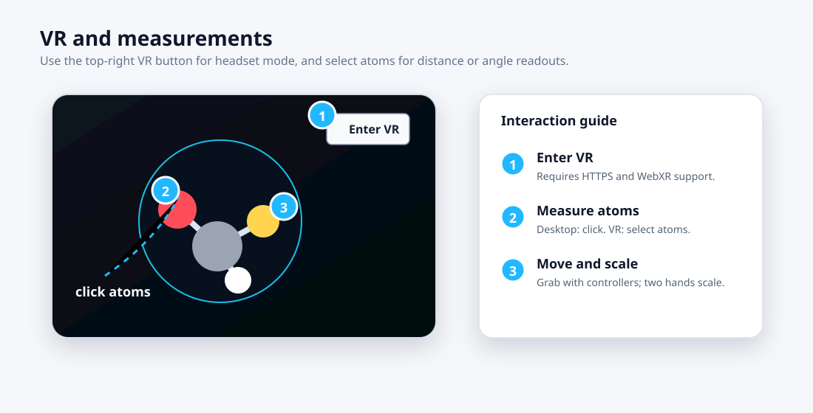
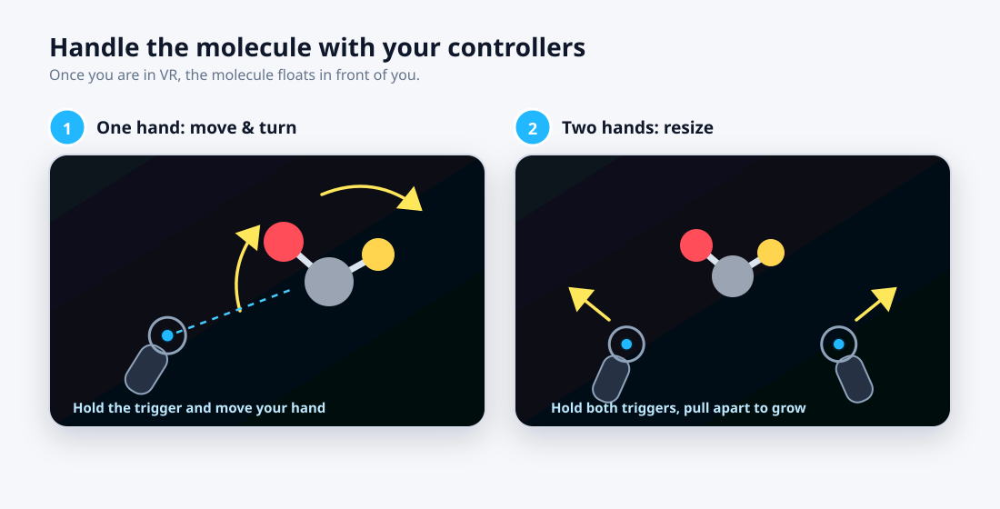
Grab with one hand (hold the trigger) to move and turn the molecule. Grab with both hands and pull them apart or together to make it bigger or smaller — like stretching a photo on a phone.
If something looks wrong
The most common hiccups, and their one-line fixes.
"This URL returned a web page, not an XYZ file"
Your cloud share link isn't public yet. In Drive/Dropbox/OneDrive, set the file to "Anyone with the link" and try again.
"Expected a .xyz or .extxyz file"
The link points at a file with a different name. Rename the file so it ends in .xyz, or use a direct link to the actual file.
My friend joined the room but sees no molecule
Load the molecule with Load URL instead of Choose File — local files stay on your computer, so others can't see them.
The room stays on "Connecting"
Check the Room server field — keep the default value unless someone gave you a different server address.
I can't move the slider or change the speed in a room
Only the presenter controls playback. Click Take Presenter first.
The VR button says "VR not supported"
Open the page in a VR headset's own browser (for example the Quest Browser). Regular desktop browsers usually can't enter VR.